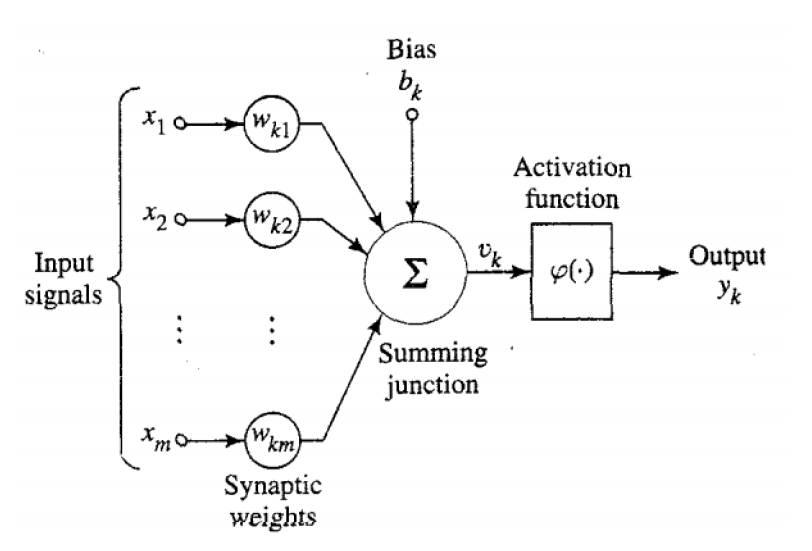

Flow chart of perceptron rule

The final year project made by Mofan Peng
Supervisor: Dr Irina V. Biktasheva
The basic theory of BNNs is that a neuron will be fired if it has received from the presynaptic neurons a summary impulse, which exceeds a particular threshold. Each impulse is all-or-none event but the number of ionic channels triggered by the signal is different from synapse to synapse. The signal from a single synapse is able to overcome the threshold and force a neuron to fire an action potential, but other synapses could realise this only by simultaneously delivering their signals. Therefore, input from every synapse, or "connection", to the neuron in the model network must be assigned with some value w, called weight of connection. Given that, it is able to draw an abstract "neuron" as a model unit of the artificial neural network.
An abstract neuron
The web applet is designed for visually demonstrating the procedure of perceptron learning rule. To use it, please reading the following instructions.
Step 1: Click the tab 'Run' to start the applet.
Step 2: Please enter your desired numbers to finish the initial settings.
Step 3: Just click the "Next" button to observe every change of corresponding parameters. It will show you how the perceptron works.